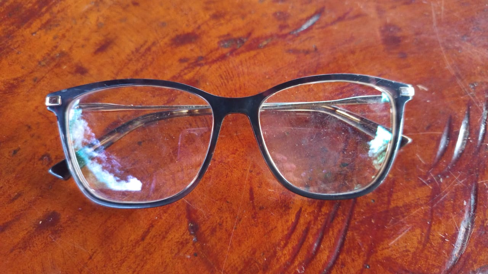

âš ï¸ Suposta onça preta é vista perto do cemitério
Moradores relatam ter avistado uma onça preta nos arredores do cemitério municipal. Equipes da Defesa Civil estão investigando e pedem atenção redobrada à população.
Fique por dentro de tudo o que acontece em nossa comunidade!
Moradores relatam ter avistado uma onça preta nos arredores do cemitério municipal. Equipes da Defesa Civil estão investigando e pedem atenção redobrada à população.
Na próxima quinta-feira, a bomba de abastecimento será desligada para manutenção. Durante esse perÃodo, os canos estarão vazios. Recomenda-se armazenar água.
Haverá atendimento médico em Santa Ana nesta quinta-feira à tarde, dia 14/08/2025. Aproveite para colocar a saúde em dia!
É de alguém? Apareceu aqui em casa, bem mansinho. Acho que se perdeu.

De 20 a 22/08 no pavilhão da Igreja São Cirilo - Nova Veneza. Horário: 8h às 16h30 com almoço no local. Curso gratuito - apenas 10 vagas.
📲 Entrar em contato pelo WhatsAppFoi encontrado próximo ao cemitério. Valdir do ônibus encontrou. É seu?
 📲 Entrar em contato